| Cátedra | Diseño de Sistemas de Información |
| Caso de estudio | Bolsines |
| Caso de uso asignado | CU 36 – Consultar seguimiento de bolsines |
| Tema de la entrega | Diseño: patrón de diseño (Adapter), implementación y diseño de experiencia de usuario |
| Curso | 3K4 |
| Número de entrega | 2 |
| Número de grupo | G1 |
| Fecha de entrega | 16/11/2026 |
| Docentes del curso | Ing. Judith Meles, Ing. María Sol Vega, Ing. Federico Mizzau Anadón, Camila Linaza |
| Docente tutor (docente del práctico) | Ing. Judith Meles |
| Ciclo lectivo | 2026 |
| Apellido y nombre | Legajo | Correo electrónico |
|---|---|---|
| Baudo, Ramiro | 78737 | baudoramiro@gmail.com |
| Esquivel, Ignacio | 408359 | nachoesquivel001@gmail.com |
| Frances, David | 80370 | davidtkf256@gmail.com |
| Gon, Federico | 94470 | federicomgon@gmail.com |
| Vasquez, Facundo Santiago | 403818 | facuvasquezzz@gmail.com |
Patrón aplicado: Adapter (Gamma et al.), patrón estructural en su variante de objetos.
En el CU 36 el sistema debe solicitar la ubicación de cada bolsín en tránsito al dispositivo GPS Tracker que lo acompaña. Según la Observación 1 del caso de uso, existen tres modelos de GPS Tracker y cada uno expone una interfaz distinta e incompatible con las demás:
| Modelo | Operación | Parámetros | Respuesta |
|---|---|---|---|
| XTR-4500L | getBolsinLocation() | API Key, número de bolsín (entero), código de CM origen (String) | JSON en formato cadena de caracteres |
| NavTrack QX-7A | retrieveTrackingData() | API Key, número de bolsín (entero), código de CM destino (String) | Un único String con los ítems separados por comas |
| GeoPulse MTR-900 | fetchCargoPositions() | API Key, número de bolsín (entero) | Matriz |
En los tres casos el sistema necesita la misma información: número de bolsín, latitud, longitud y fecha y hora de la última actualización de posición.
IAdaptadorGPSTracker) que siempre devuelve un objeto UbicacionBolsin. Cada adaptador concreto encapsula la comunicación con un modelo y traduce su pedido y su respuesta al formato que espera el sistema.| Rol en el patrón | Clase |
|---|---|
| Cliente | InterfazGPSTracker «boundary», utilizada por GestorConsultarSeguimientoBolsines |
| Target (objetivo) | IAdaptadorGPSTracker «interface» |
| Adapter (adaptadores) | AdaptadorGPSTrackerXTR4500L, AdaptadorGPSTrackerNavTrackQX7A, AdaptadorGPSTrackerGeoPulseMTR900 |
| Adaptee (adaptados) | ServicioGPSTrackerXTR4500L, ServicioGPSTrackerNavTrackQX7A, ServicioGPSTrackerGeoPulseMTR900 |
| Resultado común | UbicacionBolsin |
El diagrama de clases de diseño (Figura 1, en la página siguiente) muestra la estructura que resulta de aplicar el patrón. Incluye tipos de datos, tipos de parámetros y retornos y visibilidad de los métodos: + público, - privado.
Bolsin incorpora el atributo modeloGPSTracker: String, que indica qué dispositivo lleva cada bolsín. InterfazGPSTracker usa ese dato para crear el adaptador concreto en crearAdaptador().obtenerUbicacion(numeroBolsin: int, codigoCMOrigen: String, codigoCMDestino: String): UbicacionBolsin, recibe todos los datos que podría necesitar cualquier modelo. Cada adaptador usa solo los que su servicio requiere.solicitarUbicacion() (comunicación con el servicio externo) y adaptarUbicacion() (traducción del formato recibido a UbicacionBolsin).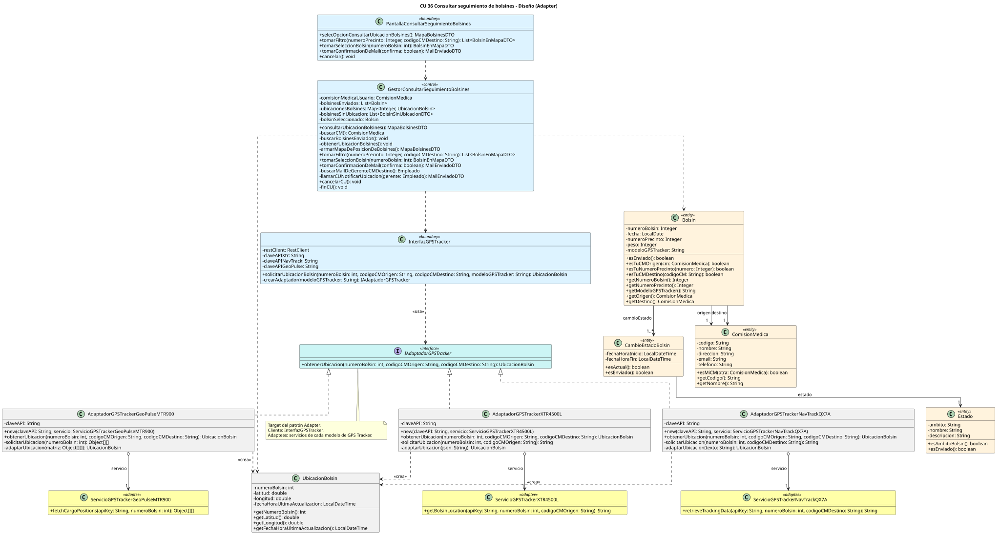
La Figura 2 modela la parte del escenario que se rediseña por la aplicación del patrón: la obtención de la ubicación de los bolsines con el GPS Tracker modelo XTR-4500L, el del flujo descripto. La Figura 3 muestra el flujo básico completo, con las correcciones de la Entrega 1.
GestorConsultarSeguimientoBolsines busca los bolsines en estado Enviado de la CM del usuario logueado. Cada Bolsin resuelve su estado a través de su CambioEstadoBolsin actual.obtenerUbicacionBolsines(), para cada bolsín, obtiene el número, los códigos de CM origen y destino y el modelo de GPS. Luego invoca InterfazGPSTracker.solicitarUbicacionBolsin(numeroBolsin, codigoCMOrigen, codigoCMDestino, modeloGPSTracker): UbicacionBolsin.InterfazGPSTracker.crearAdaptador(modeloGPSTracker) crea el adaptador concreto con new(claveAPI, servicio). En el escenario modelado crea AdaptadorGPSTrackerXTR4500L.obtenerUbicacion() del adaptador.solicitarUbicacion(), que llama a ServicioGPSTrackerXTR4500L.getBolsinLocation(apiKey, numeroBolsin, codigoCMOrigen): String y recibe el JSON.adaptarUbicacion(json): toma el primer ítem y convierte el número de bolsín a entero, la latitud y la longitud a decimal y la fecha y hora a LocalDateTime. Con esos datos crea UbicacionBolsin y lo devuelve.armarMapaDePosicionDeBolsines() para que la pantalla dibuje el mapa.Los otros dos adaptadores siguen la misma secuencia, cada uno con su formato. AdaptadorGPSTrackerNavTrackQX7A separa el String por comas y AdaptadorGPSTrackerGeoPulseMTR900 lee la primera fila de la matriz. Si el servicio no informa la ubicación, el adaptador lanza GPSTrackerException y el gestor registra el bolsín como "sin ubicación" (flujo alternativo A3).
InterfazGPSTracker.solicitarUbicacionBolsin(nroBolsin, cmOrigen, cmDestino, modelo)
adaptador = crearAdaptador(modelo)
retornar adaptador.obtenerUbicacion(nroBolsin, cmOrigen, cmDestino)
InterfazGPSTracker.crearAdaptador(modelo)
si modelo = "XTR-4500L" retornar new AdaptadorGPSTrackerXTR4500L(claveAPIXtr, servicio)
si modelo = "NavTrack QX-7A" retornar new AdaptadorGPSTrackerNavTrackQX7A(claveAPINavTrack, servicio)
si modelo = "GeoPulse MTR-900" retornar new AdaptadorGPSTrackerGeoPulseMTR900(claveAPIGeoPulse, servicio)
AdaptadorGPSTrackerXTR4500L.obtenerUbicacion(nroBolsin, cmOrigen, cmDestino)
json = solicitarUbicacion(nroBolsin, cmOrigen) // servicio.getBolsinLocation(claveAPI, ...)
retornar adaptarUbicacion(json) // items[0] -> new UbicacionBolsin(...)
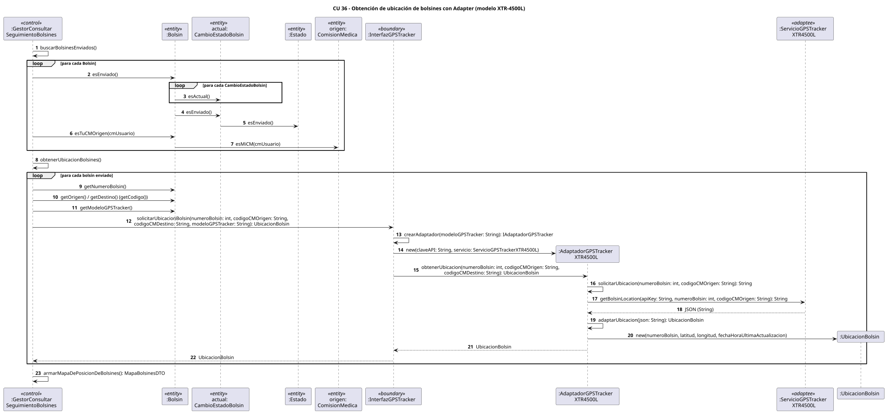
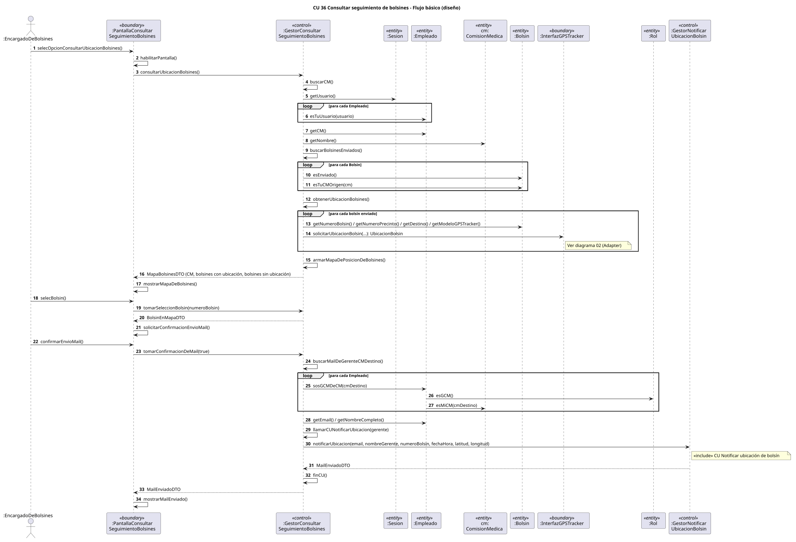
| Aspecto | Detalle |
|---|---|
| Lenguaje de programación | Java 17 (backend) · JavaScript (frontend) |
| Framework | Spring Boot 3.3 (Spring Web, Spring Data JPA) · React 18 con Vite y Material UI |
| Tecnología | Web: API REST y aplicación web, según el requerimiento no funcional 1 de la ERS |
| Base de datos | H2 en modo archivo (los datos persisten entre ejecuciones) |
| Framework de persistencia | JPA con Hibernate (Spring Data JPA, repositorios JpaRepository) |
| GPS Tracker | API provista por la cátedra (dsi-api-bolsines), consumida mediante RestClient desde las clases ServicioGPSTracker… |
| Mapa | Leaflet con OpenStreetMap, usado en lugar de la librería de Google Maps porque no requiere API key ni facturación. La responsabilidad de la boundary con el servidor de mapas no cambia. |
| Correo electrónico | InterfazServidorCorreo con envío simulado: el correo se registra en el log del servidor y se muestra en pantalla |
| Elemento del modelo | Implementación (paquete ar.edu.utn.dsi.bolsines) |
|---|---|
| PantallaConsultarSeguimientoBolsines «boundary» | boundary/pantallas/PantallaConsultarSeguimientoBolsines.java (endpoints REST) y su vista en frontend/src/pantallas/ |
| GestorConsultarSeguimientoBolsines «control» | control/GestorConsultarSeguimientoBolsines.java |
| Entidades «entity» | entidades/: Bolsin, CambioEstadoBolsin, Estado, ComisionMedica, Empleado, Rol, Usuario, Sesion |
| InterfazGPSTracker «boundary» (cliente del patrón) | boundary/interfaces/InterfazGPSTracker.java |
| Patrón Adapter (target y adaptadores) | patrones/adapter/ |
| Adaptees (servicios de cada GPS) | patrones/adapter/serviciosexternos/ |
| CU incluido Notificar ubicación de bolsín | control/GestorNotificarUbicacionBolsin.java |
| Persistencia | repositorios/ (Spring Data JPA) |
Como en la implementación de referencia de la cátedra, por tratarse de una API REST, los mensajes del gestor hacia la pantalla se resuelven con el valor de retorno de cada operación. Las entidades no se envían a la pantalla: se envían objetos de transferencia de datos (DTO).
// Target
public interface IAdaptadorGPSTracker {
UbicacionBolsin obtenerUbicacion(int numeroBolsin, String codigoCMOrigen, String codigoCMDestino);
}
// Adaptador concreto (XTR-4500L)
public class AdaptadorGPSTrackerXTR4500L implements IAdaptadorGPSTracker {
private final String claveAPI;
private final ServicioGPSTrackerXTR4500L servicio;
public UbicacionBolsin obtenerUbicacion(int numeroBolsin, String codigoCMOrigen, String codigoCMDestino) {
String respuesta = solicitarUbicacion(numeroBolsin, codigoCMOrigen);
return adaptarUbicacion(respuesta);
}
...
}
// Cliente
public UbicacionBolsin solicitarUbicacionBolsin(int numeroBolsin, String codigoCMOrigen,
String codigoCMDestino, String modeloGPSTracker) {
IAdaptadorGPSTracker adaptador = crearAdaptador(modeloGPSTracker);
return adaptador.obtenerUbicacion(numeroBolsin, codigoCMOrigen, codigoCMDestino);
}
| Flujo | Implementación |
|---|---|
| Flujo básico (pasos 1 a 11) | Consulta, mapa, selección del bolsín, confirmación y envío del correo al GCM destino |
| A1 – No se encuentran bolsines en estado Enviado | La pantalla informa que no hay bolsines en tránsito |
| A2 – No se encuentra bolsín con el número de precinto ingresado | Filtro por número de precinto (tomarFiltro()) |
| A3 – El GPS Tracker no pudo informar ubicación | El adaptador lanza GPSTrackerException y el bolsín se informa como "sin ubicación" |
| A4 – El EB cancela la ejecución del CU | Botón Cancelar (cancelarCU()) |
| A5 – El EB no selecciona enviar el correo | Opción "No enviar" (tomarConfirmacionDeMail(false)) |
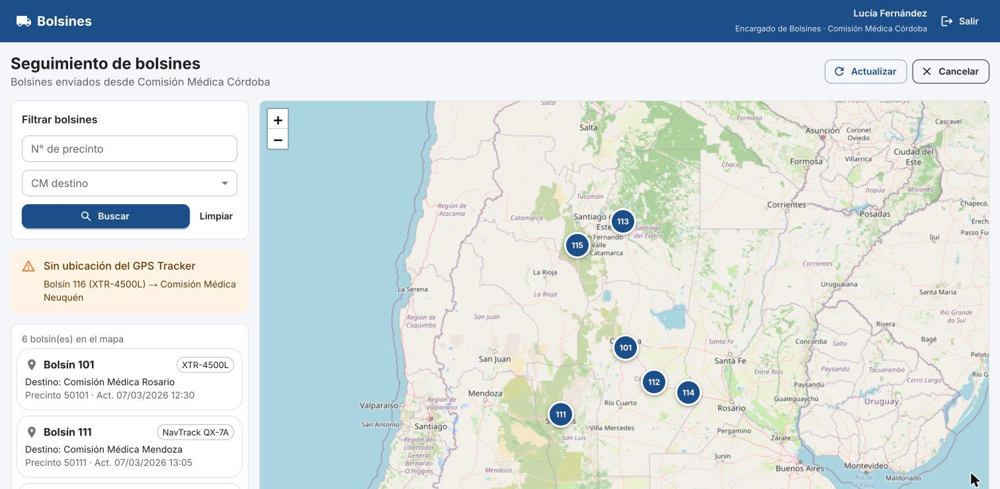
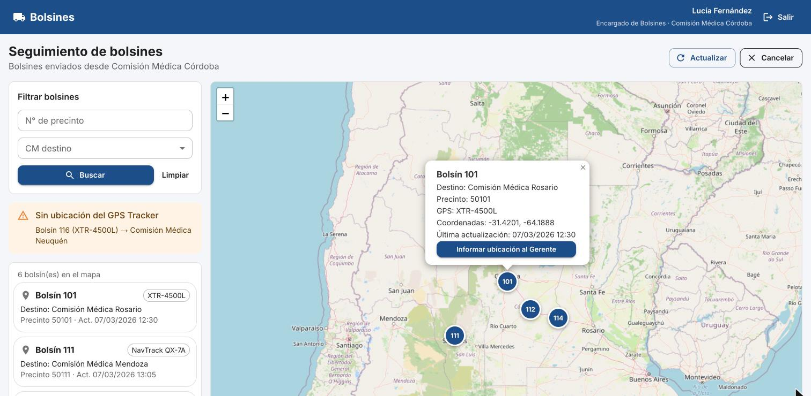
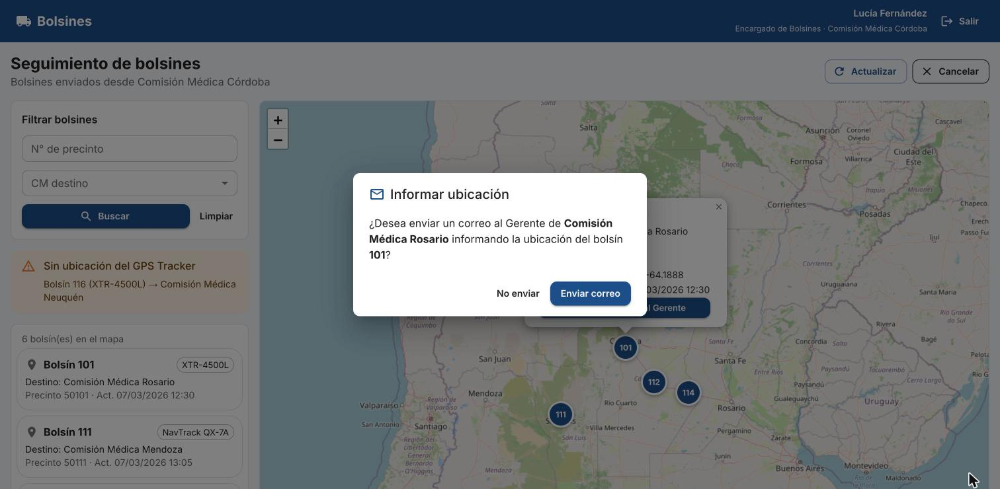
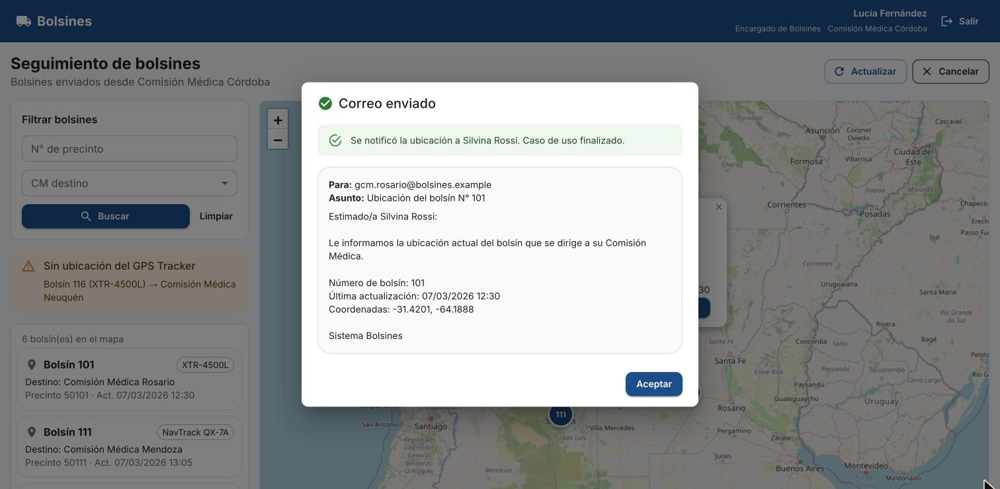
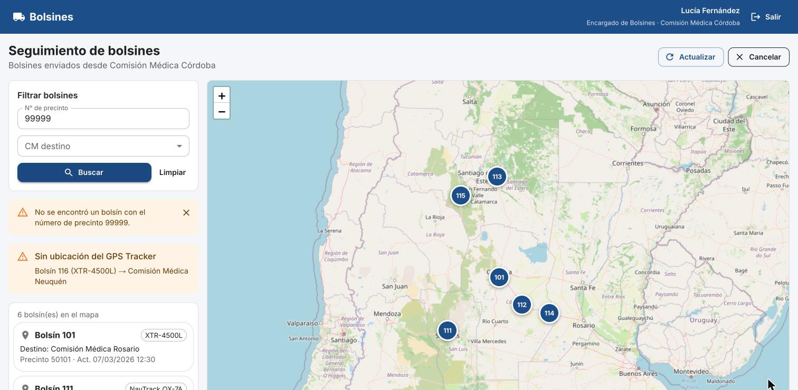
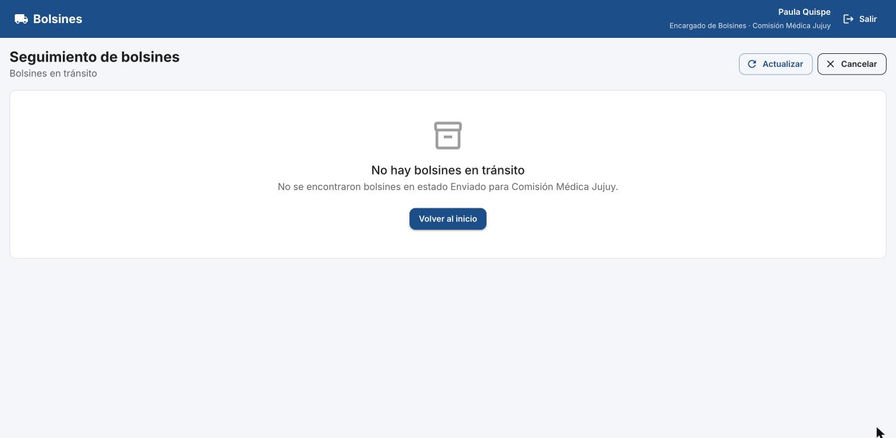
| Observación de la revisión | Corrección |
|---|---|
Qué información muestra mostrarComisionMedicaEmp() y de dónde la obtiene | Se obtiene la CM del empleado logueado (getCM()) y su nombre (ComisionMedica.getNombre()) |
No necesita el puntero a Estado desde el gestor | Se eliminó. El bolsín consulta su estado a través de su CambioEstadoBolsin actual |
| No utiliza el cambio de estado actual | Bolsin.esEnviado() recorre sus cambios de estado con esActual() y al actual le pide esEnviado() |
buscarBolsinEnEstadoEnviado() poco coherente | Reemplazado por Bolsin.esEnviado() |
| No busca la CM destino ni el número de bolsín | Se obtienen número, precinto, CM destino y modelo de GPS de cada bolsín |
| Faltaban automensajes antes de consultar al GPS y al mapa | Se agregaron obtenerUbicacionBolsines() y armarMapaDePosicionDeBolsines() |
sosGCM(): "lo puede resolver todo" y falta el loop | Loop sobre los empleados con Empleado.sosGCMDeCM(cmDestino), que consulta a Rol.esGCM() y a ComisionMedica.esMiCM() |
Línea de vida seleccionado: Bolsin sin uso | Se eliminó |
| CU incluido | Se corrigió a "Notificar ubicación de bolsín" (antes figuraba "Registrar revisión de documentación") |
Asociación CambioEstadoBolsin → Empleado mal nombrada ("estado") | Se nombra responsable (atributo CambioEstadoBolsin.responsable en la implementación) |
| Resolución de las imágenes | Los diagramas se exportan en formato vectorial (SVG) |
| Máquinas de estado: notación de las transiciones y guardas del Remito | Se redibujaron con la notación Evento / método() (por ejemplo 19. Generar bolsín / new()). En Remito se usan las guardas [toda la documentación es aceptada] y [no toda la documentación es aceptada], se eliminó la transición por documentación que no corresponde a la CM destino y se agregó el retorno a Creado por el CU 21 Eliminar bolsín. Ver Anexo 7. |
Resultados de las actividades de descubrimiento (MoodBoard, Mapa de Empatía y User Journey) para una Persona vinculada al actor Encargado de Bolsines (EB): Marta Giménez, 48 años, Encargada de Bolsines de la Comisión Médica Córdoba. Su objetivo es saber dónde está cada bolsín enviado y avisar a la CM destino sin perder tiempo. Los afiches, elaborados en formato digital, se presentan en las secciones 6.4 a 6.6.
| Hallazgo (Mapa de Empatía / User Journey) | Decisión de diseño de la interfaz |
|---|---|
| Cuando el correo retira el bolsín, la Persona pierde el rastro | El mapa con la posición de los bolsines es el elemento principal de la pantalla |
| Busca números de precinto en planillas | Filtro por número de precinto y por CM destino |
| Escribe a mano los mails para los gerentes | Acción "Informar ubicación al Gerente" con el correo armado por el sistema |
| Momento crítico: un bolsín que no informa ubicación | Aviso destacado con los bolsines sin ubicación (A3) |
| No es experta en tecnología y tiene poco tiempo | Pantallas despejadas, una acción principal por pantalla, mensajes cortos y confirmación antes de enviar |
| Paleta del MoodBoard (azul institucional, amarillo precinto, verde) | Azul para la barra y las acciones; amarillo para el bolsín seleccionado en el mapa; verde para los mensajes de éxito |
| Patrón | Aplicación |
|---|---|
| Maestro-detalle | Lista de bolsines a la izquierda y mapa a la derecha; al elegir un bolsín en la lista, el mapa se centra en él |
| Filtro / búsqueda | Panel "Filtrar bolsines" por número de precinto y CM destino |
| Diálogo modal de confirmación | Consulta previa al envío del correo (paso 8) |
| Retroalimentación | Diálogo "Correo enviado" con vista previa del mensaje y avisos temporales |
| Estado vacío | Pantalla "No hay bolsines en tránsito" (A1) |
| Indicador de progreso | Mensaje mientras se consulta a los GPS Tracker |
| Alertas no bloqueantes | Bolsines sin ubicación (A3) y precinto inexistente (A2) |
| Menú de tarjetas | Menú principal del EB; las opciones no implementadas aparecen deshabilitadas |
| Contexto del usuario | Barra superior con nombre, rol y CM del usuario logueado |
| Ventana emergente sobre el mapa | Detalle del bolsín al hacer clic en su marcador |
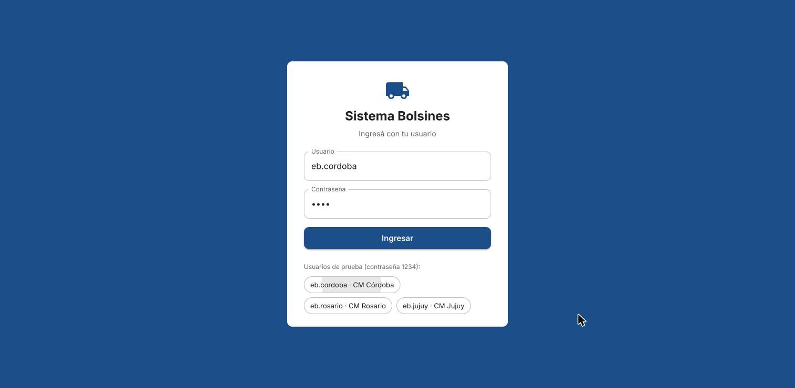
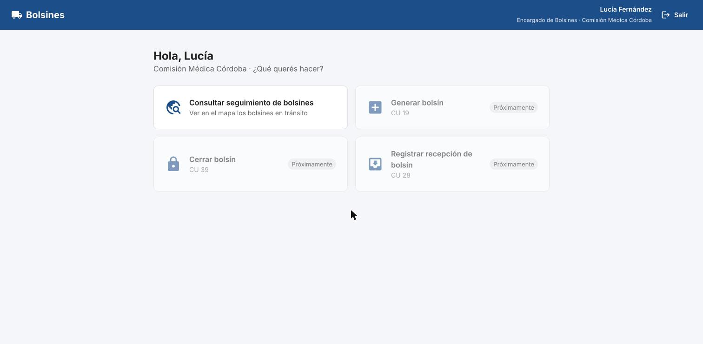
Las pantallas del caso de uso se muestran en la sección 4.5.
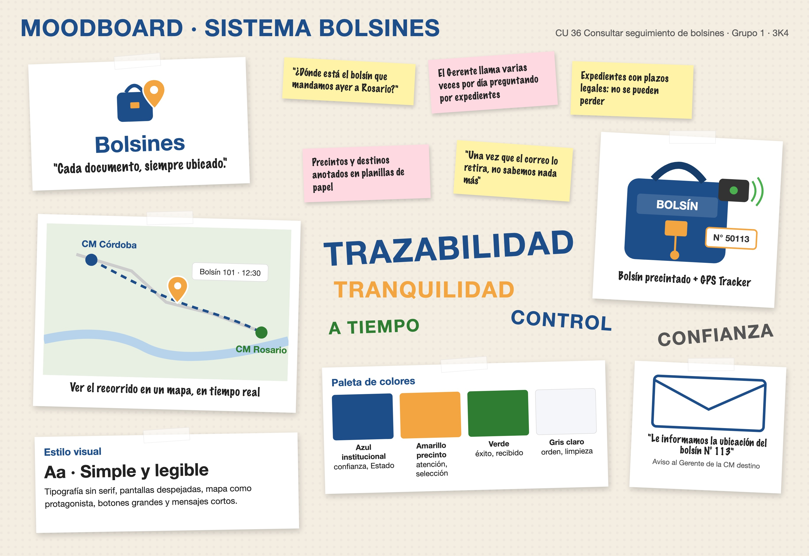
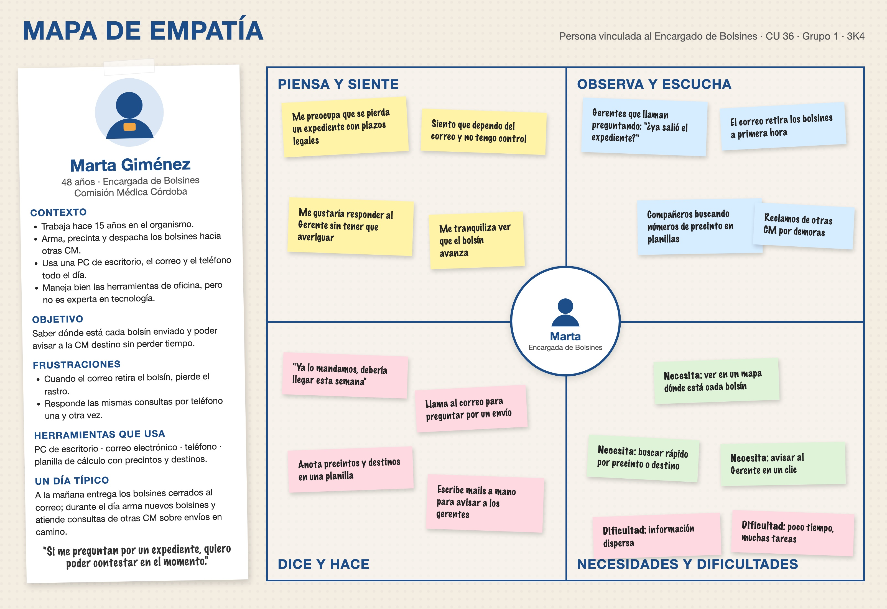
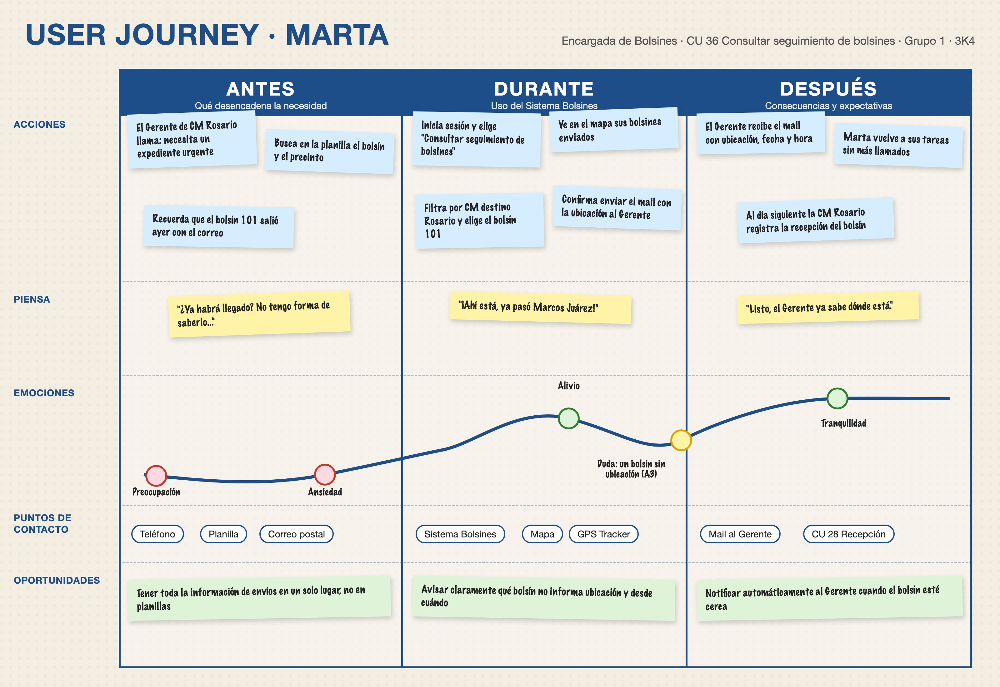
Máquinas de estado asignadas al CU 36 (Bolsín y Remito), redibujadas según la revisión de la Entrega 1. Las transiciones usan la notación Evento / método(), donde el evento es el caso de uso que provoca el cambio.
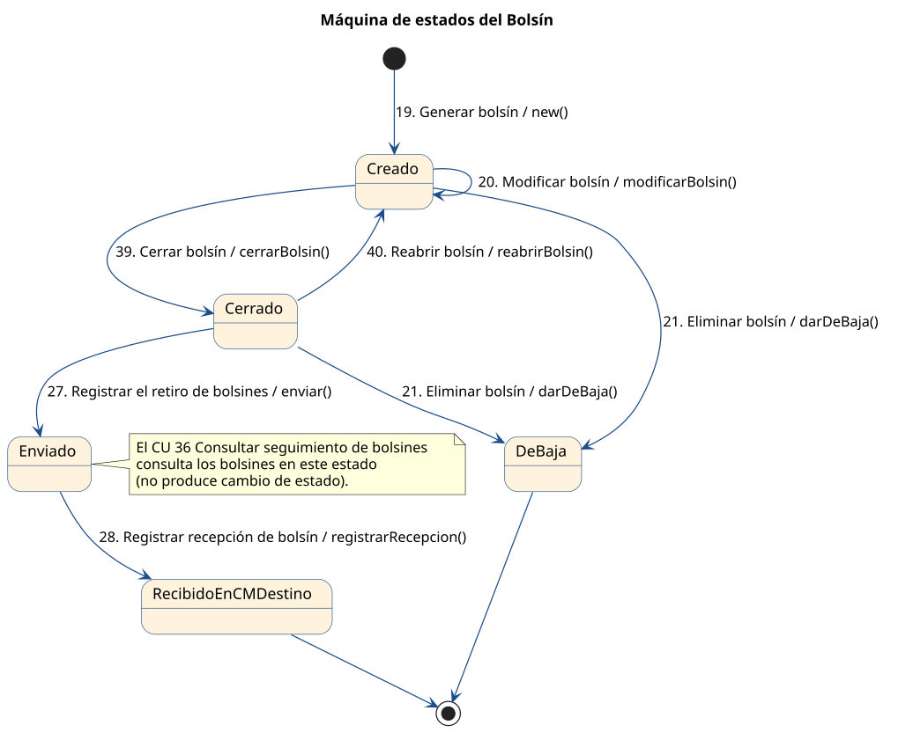
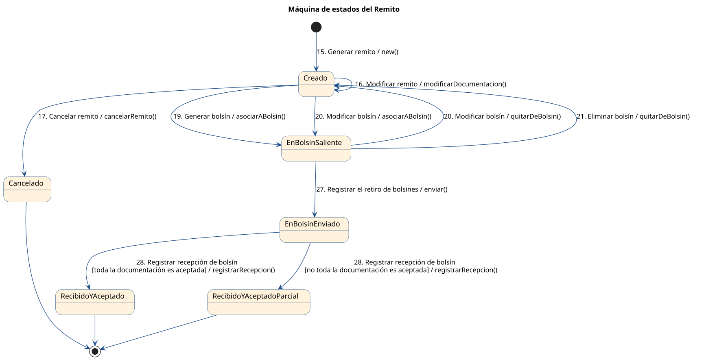